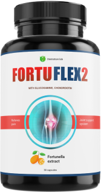

медицина
Редактор: Isabel
Опубликовано ..
50135 53
Амалия Гомес: как здоровые суставы подарили мне вторую жизнь
Амалии Гомес 84. У нее трое детей, пятеро внуков и шесть правнуков. Амалия считает себя очень счастливой женщиной, но больные суставы чуть ли лишили ее радости жизни. Благодаря внуку Амалия может снова наслаждаться игрой с внуками, любимым садом и даже ходить на свидания.
Амалия: Я очень жизнерадостный человек. У меня большая семья, и я люблю вести активный образ жизни. Я играю с маленькими правнуками, у меня прекрасный сад, дом, и все это требует от меня сил.
И вот 4 года назад мои суставы начали болеть. Они болели день и ночь, делая мою жизнь просто невыносимой. Руки и ноги отекали, мне было трудно ходить, я едва могла обслуживать себя. Пальцы меня не слушались, и вся жизнь превратилась в одну сплошную ноющую боль. Внуки просят «бабушка, поиграй с нами в прятки», а я не только не могу спуститься в подвал, чтобы их поискать, я даже едва могу дойти до соседней комнаты.
Я начала пить обезболивающие. Каждый день все больше и больше обезболивающих. Мне кажется, от них у меня появился какой-то туман в голове и самочувствие ухудшалось. Я не знала, как себе помочь. Врачи тоже не знали. Они прописывали средства для снятия боли, но это все никак не решало моей проблемы. Больше всего мне хотелось вновь обрести здоровые суставы, чтобы жить так, как я привыкла.
По статистике около 20% мирового населения имеет болезни, связанные с суставами. По некоторым прогнозам, к 2023 году эта цифра может взлететь вдвое.
Я начала ходить по врачам, но все, что мне могли предложить – это пожизненный прием обезболивающих (с постоянным увеличение доз) или дорогостоящая операция. Мне казалось, что входа из моей ситуации просто нет.
Корреспондент: Как вы справились со своей проблемой?
Амалия: Я, наверное, очень хорошая бабушка. Меня любят мои внуки. Они очень переживали за меня и всячески пытались помочь. Один из внуков начал изучать вопрос и понял, что обезболивающие не имеют ничего общего с лечением суставов. Нужно прежде всего восстановить суставную ткань. И он нашел инновационное средство. Абсолютно натуральное, без каких-либо побочных эффектов. Помню то утро, когда он пришел ко мне и сказал: «Бабушка, я знаю, как тебе помочь».
И достал из сумки две баночки. Я сначала не поверила ему. Но он так подробно все объяснил, что я решила попробовать. Тем более, раз препарат полностью натуральный. Я заметила улучшения уже через несколько дней приема. Сначала я поняла, что могу разогнуть пальцы по утрам. Это была настоящая победа для меня. Затем боли стали потихоньку стихать. Спустя месяц приема препарата боли полностью ушли, отеки спали, пальцы снова могут двигаться.
Воздействие Fortuflex2 на очаги воспаления
(эффект уже через 1 неделю)
Корреспондент: Как называется это средство?
Нам удалось взять интервью у доктора Алехандро Торреса. Доктор Торрес работает ревматологом уже 20 лет и знает все о здоровье суставов.
Корреспондент: Доктор Торрес, скажите, почему начинают болеть суставы и как можно этого избежать?
Доктор Торрес: К сожалению, мы все стареем. С возрастом хрящевая ткань изнашивается, межсуставной жидкости становится меньше. Знаете, как старая дверь начинает скрипеть и плохо открываться? Примерно тоже самое происходит и с вашими суставами.
Нужно быть внимательными к первым признакам болезней суставов и не игнорировать их. Если у вас есть
-
скованность движений по утрам
-
скованность движений после отдыха
-
отечность или покраснение вокруг суставов
-
треск, скрип, щелчки в области сустава
то вам следует серьезно задуматься о здоровье ваших суставов, до того, как появятся сильные боли, которые испортят вашу жизнь.
Корреспондент: каким образом можно заниматься профилактикой, и что делать, если болезнь суставов настигла?
Доктор Торрес: до недавнего времени единственным способом борьбы было приглушение боли специальными обезболивающими препаратами. Это немного улучшало качество жизни пациентов, но не решало проблему глобально. Но сейчас на рынке появился инновационный препарат Фортуфлекс2 – это новое слово в лечении суставов. Он не просто снимает симптомы, но и восстанавливает суставную ткань. Фортуфлекс2 содержит такие действующие вещества, как:

-
Хондроитин - помогает восстановлению суставной сумки, служит смазкой и улучшает подвижность сустава, регенерирует костную и хрящевую ткани.
-
Глюкозамин – способствует регенерации эластичной суставной ткани, предупреждает развитие воспалительных процессов.
Экстракт фортунеллы – улучшает метаболические процессы во всем организме, восполняет дефицит витаминов и минералов.
Магний – уменьшает суставные боли, положительно влияет на рост костей, избавляет от судорог.
Витамин С – способствует синтезу собственного гиалурона и хондроитина.
Таким образом мы видим, что данное средство запускает процессы регенерации внутри сустава и таким образом нормализует его функции естественным путем.
Корреспондент: как принимать этот препарат?
Доктор Торрес: Фортуфлекс2 не вызывает привыкания и применяется курсом с последующей поддерживающей терапией. То есть, вы пропиваете курс, а затем периодически повторяете прием для закрепления результата. Прием: 2-3 капсулы в день не зависимо от приема пищи.
-
Исчезли боли – 98,5% испытуемых
-
Спали отек сустава – 96% испытуемых
-
Улучшилась подвижность суставов – 99,2% испытуемых
-
Отсутвовали побочные эффекты – 100% испытуемых
Препарат был разработан научно-исследовательским институтом не так давно, и мы надеемся, что он сможет избавить сотни тысяч пожилых людей от хронических болезней суставов. Одним из безусловных плюсов в нынешних экономических условиях является невысокая стоимость препарата, что делает его доступным широким массам.
На данный момент препарат можно приобрести на официальном сайте компании-производителя по сниженной цене.
Корреспондент: спасибо, доктор Торрес!
Сейчас Амалия вернулась к своим домашним делам. Она снова может заниматься садом и играть с внуками. Ее розы – ее гордость, и она снова может их растить. А еще, Амалия недавно ходила на свидание в парк. И кто знает, чем это закончится. Будем надеяться, что впереди у Амалии еще много счастливых дней.
Передавала привет нашей редакции по Zoom
Для заказа на официальном сайте можно воспользоваться акцией, которая действует - ДО ..
FortuFlex2 сейчас можно приобрести со скидкой 50%
Узнать больше о натуральном средстве Fortuflex2- Чтобы заказать FortuFlex2, вам необходимо:
- Заполните форму на официальном сайте
- Менеджер свяжется с вами для подтверждения адреса доставки.
- Через 1-3 дня (срок доставки) вы получите FortuFlex2 курьером.
- Оплата при получении!
Комментарии
Антон
у меня есть опыт приема этого препарата. После перенесенного вирусного заболевания у меня начали сильно болеть суставы и постоянно воспалялись. Жил на обезболивающих, причем они уже переставали помогать. Пока не наткнулся в интернете на информацию о Фортуфлекс2. Буквально за месяц приема боли полностью ушли, я даже не вспоминаю о них.
Анна
У меня похожая ситуация на автора. Мне тоже о Фортуфлекс2 принес внук. Жить стало намного легче.
Алина
у меня слабое здоровье и очень беспокоили коленки. Постоянно отекали. Этот препарат – мое спасение. Если я чувствую, что опять стали плохо двигаться суставы – я повторяю курс. Всегда стоит дома баночка.
Инга
бегу заказывать бабуле. Мне так жалко ее, постоянно эти боли.
Жанна
тоже заказала для родителей пару баночек.
Иоанн
все пришло вовремя, спасибо большое.
Полли
Мне ревматолог рассказывал про этот препарат, но у меня был какой-то страх заказывать в интернете. В результате только зря лишние полгода страдала. Лучше бы заказала сразу. Пришло все быстро, хорошо упаковано. Препарат начал давать эффект уже через пару дней приема.
Мария
да, я тоже была скептически настроена к покупкам в интернете, но этот препарат, наверное, навсегда изменил мое отношение. о Фортуфлекс2 – очень эффективный препарат.
Майк
я тоже покупал это средство деду, он после него хотя бы по дому стал сам ходить.
Ксандра
это я удачно зашла, тут скидки как раз! Закажу сразу банок 5, думаю пригодится еще и мне, и семье. Уважаю натуральные препараты.